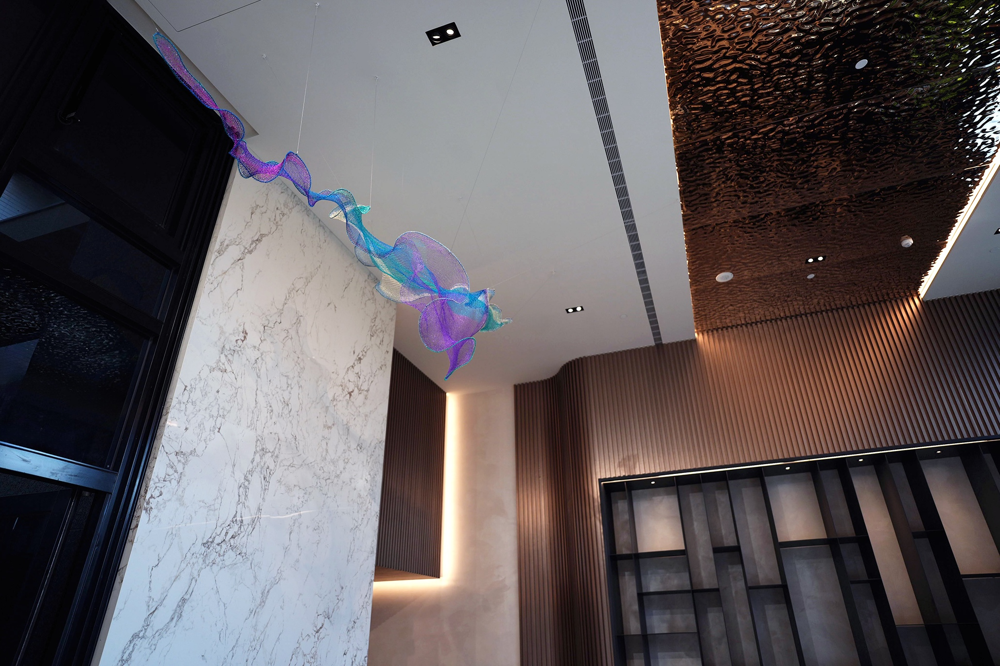

Chi
2025
- Medium
- Enamelled copper wire, metal structure
- Dimensions
- From left to right:
H94 × W300 × D96 cm
H64 × W130 × D68 cm
H90 × W313 × D120 cm - Photos
- Art_Mechanic
Commissioned for SHYEH SHENG FUAT Construction - Metropolitan Park Station
Chi—invisible, intangible—flows through all beings with a harmonious essence.
This installation gives form to the unseen Chi, sweeping like energy meridians, like wind through the air, generating a subtle choreography between invisibility and presence, stillness and motion. Light yet tense, it steers the pulse and perception of the space. Echoing wind, mirroring water, the artwork embodies Chi as envisioned in the Feng Shui principle of “harboring wind and accumulating energy,” revealing its role in harmonizing the inner body with the outer world.


